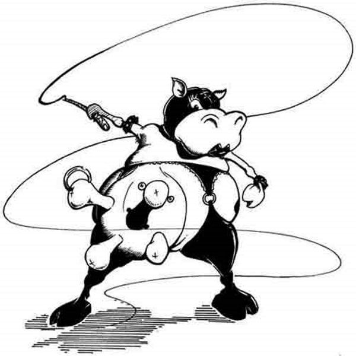
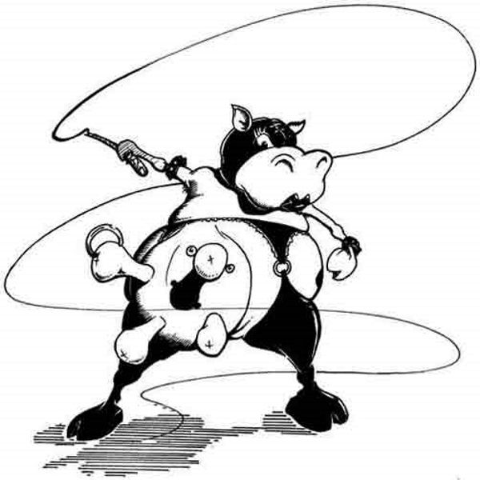

James Wakelin
After attending AUT and completing a Bachelor of Graphic Design specialising in Illustration, James Wakelin worked as a freelance illustrator in Auckland, later also teaching at AUT. After moving to Europe in 1999 to undertake a Masters Degree in Illustration, he continued to work for clients both in New Zealand, as well as in England. Returning in 2004 he continues to illustrate for a varied range of clients including book and magazine publishers, as well as design firms, and continues to work as a portrait artist. James continues to teach at AUT, and acts as an examiner on both the MA and Honours Year courses.
"Whether it’s a simple line drawing or a highly detailed rendering, we aim to produce works of excellence that meet your deadline, every time"
James Wakelin has been illustrating and designing since 1993, working for clients both in New Zealand and overseas, with personal commissions, editorial work and work for larger agencies.
 
